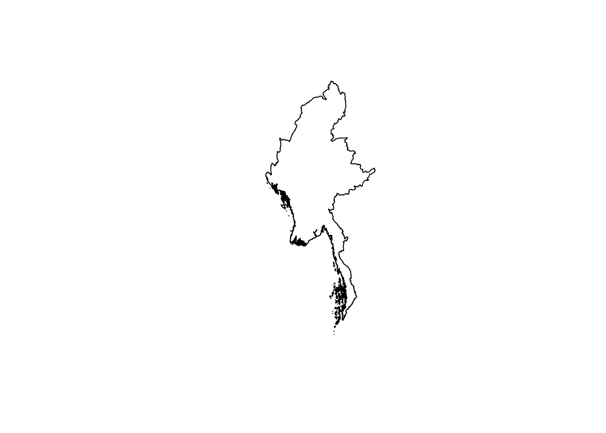
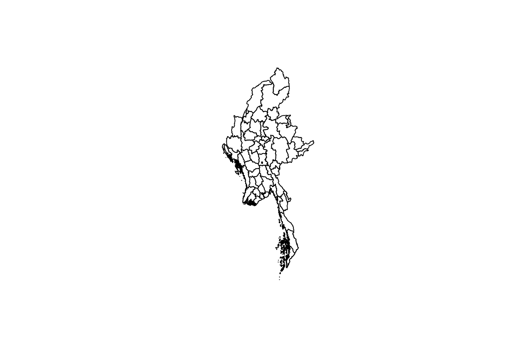
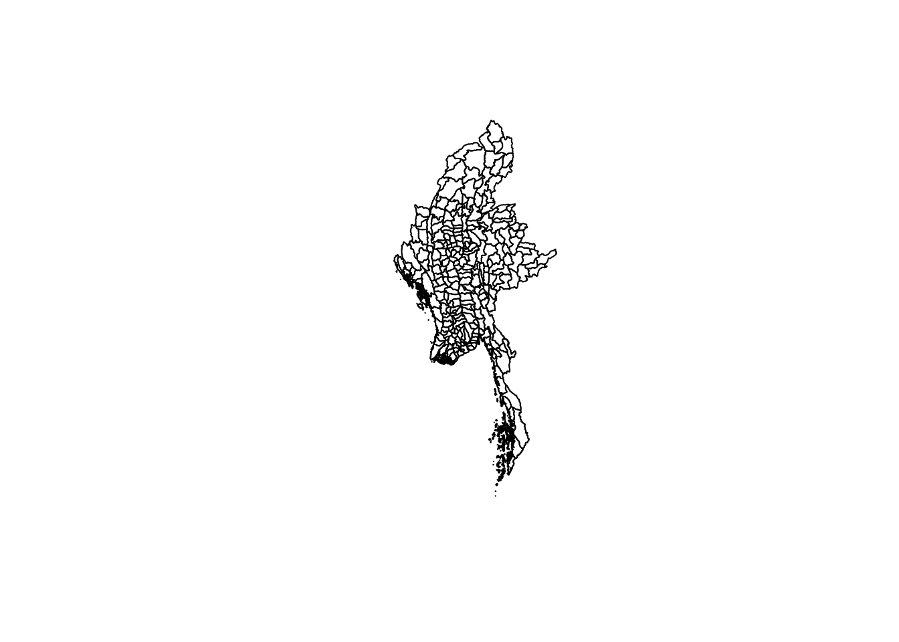

pacman:::p_load(sf,tidyverse,janitor,skimr,lubridate) # more to be addedTake-Home Exercise 1: Application of Spatial and Spatio-temporal Point Patterns Analysis to discover the geographical distribution of Armed Conflict in Myanmar
Objectives
I will be using armed conflict data of Myanmar from January 2021 to June 2024, aka Armed Conflict Location & Event Data (ACLED).
I will be focusing on thsese main event types:
Battles,
Explosion/Remote violence,
Strategic developments, and
Violence against civilians.
Along the way, I will be exploring the use of different functions to obtain more aesthetically pleasing outputs for fun.
Data
Packages
These R packages will be used:
sf: importing, managing, and processing geospatial data, and
tidyverse: performing data science tasks such as importing, wrangling and visualising data.
readr
read_csv(): reading ACLED csv data
janitor: data cleaning
lubridate: date formatting
Extra (TBD):
janitor: data cleaning
lubridate: date formatting
skimr: provide summary statistics
scrutiny: data wrangling
cowplot - add-on to ggplot for higher quality figures
htmlwidgets for R - interactive visualisations (could be used for visual analytics)
- leaflet - geo-spatial mapping
ACLED
acled_sf <- read_csv('data/2021-01-01-2024-07-01-Myanmar.csv')Rows: 51576 Columns: 31
── Column specification ────────────────────────────────────────────────────────
Delimiter: ","
chr (20): event_id_cnty, event_date, disorder_type, event_type, sub_event_ty...
dbl (11): year, time_precision, inter1, inter2, interaction, iso, latitude, ...
ℹ Use `spec()` to retrieve the full column specification for this data.
ℹ Specify the column types or set `show_col_types = FALSE` to quiet this message.Metadata
Click to expand –>
| Variable | Description |
|---|---|
| ‘event_id_cnty’ | unique alphanumeric ID by number & country acronym |
| ‘event_date’ | day-month-year of event |
| ‘year’ | self-explanatory |
| ‘time_precison’ | numeric code for level of precison of data records |
| ‘disorder_type’ | i.e. ‘Demonstrations’,‘Political violence’,‘Political violence; Demonstrations’,‘Strategic developments’ |
| ‘event_type’ | nature of event |
| ‘sub_event_type’ | provides further classification to event_type |
‘actor1’ ‘assoc_actor_1’ ‘actor2’ ‘assoc_actor_2’ |
involved actors along with their respective affiliates |
‘inter1’ ‘inter2’ |
numeric code between 0 and 8 encoding different actors |
| ‘interaction’ | indicates the 2 actor types interacting in the event (encoded inter1 & inter2 by concatenation) |
| ‘civilian_targeting’ | indicates whether the event involved civilian targeting (e.g. null if false) |
| ‘iso’ | unique 3-digit numeric code assigned to each country or territory according to ISO 3166 |
| ‘region’ | region of the world where the event took place |
| ‘country’ | self-explanatory |
‘admin1’ ‘admin2’ ‘admin3’ |
national administrative regions where the event took place (admin1 being the largest) |
| ‘location’ | self-explanatory |
| ‘latitude’ | self-explanatory |
| ‘longitude’ | self-explanatory |
| ‘geo_precision’ | numeric code for level of precison of event location |
| ‘source’ | source of event report |
| ‘source_scale’ | scale (e.g. local, international) of the source |
| ‘notes’ | description of the event |
| ‘fatalities’ | number of reported fatalities in the event |
| ‘tags’ | targets (type and estimate counts) |
| ‘time’ | Unix Timestamp of event |
Myammar’s Administrative Boundary data
Approach:
In the working file directory, group the shapefiles according to admin classification (admin0, admin1, etc.)
Load
Check structure or whatever
Merge
the1_mymr_shp4326_admin0 <- st_read(dsn = 'data/gadm41_MMR_0/', layer = 'gadm41_MMR_0')Reading layer `gadm41_MMR_0' from data source
`/Users/williamtjw/is415-gaa-williamtjw/resources/Take-home_Ex/ex1/data/gadm41_MMR_0'
using driver `ESRI Shapefile'
Simple feature collection with 1 feature and 2 fields
Geometry type: MULTIPOLYGON
Dimension: XY
Bounding box: xmin: 92.1725 ymin: 8.824445 xmax: 101.1768 ymax: 28.54326
Geodetic CRS: WGS 84str(the1_mymr_shp4326_admin0)Classes 'sf' and 'data.frame': 1 obs. of 3 variables:
$ GID_0 : chr "MMR"
$ COUNTRY : chr "Myanmar"
$ geometry:sfc_MULTIPOLYGON of length 1; first list element: List of 1191
..$ :List of 1
.. ..$ : num [1:39, 1:2] 97.8 97.8 97.8 97.8 97.8 ...
..$ :List of 1
.. ..$ : num [1:125, 1:2] 97.8 97.8 97.8 97.8 97.8 ...
..$ :List of 1
.. ..$ : num [1:70, 1:2] 97.9 97.9 97.9 97.9 97.9 ...
..$ :List of 1
.. ..$ : num [1:343, 1:2] 97.9 97.9 97.9 97.9 97.9 ...
..$ :List of 1
.. ..$ : num [1:540, 1:2] 97.9 97.9 97.9 97.9 97.9 ...
..$ :List of 1
.. ..$ : num [1:33, 1:2] 97.9 97.9 97.9 97.9 97.9 ...
..$ :List of 1
.. ..$ : num [1:33, 1:2] 98 98 98 98 98 ...
..$ :List of 1
.. ..$ : num [1:272, 1:2] 98 98 98 98 98 ...
..$ :List of 1
.. ..$ : num [1:30, 1:2] 97.9 97.9 97.9 97.9 97.9 ...
..$ :List of 1
.. ..$ : num [1:13, 1:2] 98 98 98 98 98 ...
..$ :List of 1
.. ..$ : num [1:313, 1:2] 98 98 98 98 98 ...
..$ :List of 1
.. ..$ : num [1:105, 1:2] 97.9 97.9 97.9 97.9 97.9 ...
..$ :List of 1
.. ..$ : num [1:12, 1:2] 97.9 97.9 97.9 97.9 97.9 ...
..$ :List of 1
.. ..$ : num [1:37, 1:2] 98 98 98 98 98 ...
..$ :List of 1
.. ..$ : num [1:95, 1:2] 97.9 97.9 97.9 97.9 97.9 ...
..$ :List of 1
.. ..$ : num [1:59, 1:2] 98 98 98 98 98 ...
..$ :List of 1
.. ..$ : num [1:38, 1:2] 98 98 98 98 98 ...
..$ :List of 1
.. ..$ : num [1:14, 1:2] 98 98 98 98 98 ...
..$ :List of 1
.. ..$ : num [1:32, 1:2] 98 98 98 98 98 ...
..$ :List of 1
.. ..$ : num [1:37, 1:2] 98 98 98 98 98 ...
..$ :List of 1
.. ..$ : num [1:157, 1:2] 98.1 98.1 98.1 98.1 98.1 ...
..$ :List of 1
.. ..$ : num [1:91, 1:2] 98 98 98 98 98 ...
..$ :List of 1
.. ..$ : num [1:36, 1:2] 98.1 98.1 98.1 98.1 98.1 ...
..$ :List of 1
.. ..$ : num [1:230, 1:2] 98.1 98.1 98.1 98.1 98.1 ...
..$ :List of 1
.. ..$ : num [1:26, 1:2] 98 98 98 98 98 ...
..$ :List of 1
.. ..$ : num [1:9, 1:2] 98 98 98 98 98 ...
..$ :List of 1
.. ..$ : num [1:30, 1:2] 98 98 98 98 98 ...
..$ :List of 1
.. ..$ : num [1:51, 1:2] 98 98 98 98 98 ...
..$ :List of 1
.. ..$ : num [1:170, 1:2] 98.1 98.1 98.1 98.1 98.1 ...
..$ :List of 1
.. ..$ : num [1:13, 1:2] 98.1 98.1 98.1 98.1 98.1 ...
..$ :List of 1
.. ..$ : num [1:14, 1:2] 98.1 98.1 98.1 98.1 98.1 ...
..$ :List of 1
.. ..$ : num [1:67, 1:2] 98.1 98.1 98.1 98.1 98.1 ...
..$ :List of 1
.. ..$ : num [1:127, 1:2] 98 98 98 98 98 ...
..$ :List of 1
.. ..$ : num [1:475, 1:2] 98 98 98 98 98 ...
..$ :List of 1
.. ..$ : num [1:95, 1:2] 98 98 98 98 98 ...
..$ :List of 1
.. ..$ : num [1:37, 1:2] 98 98 98 98 98 ...
..$ :List of 1
.. ..$ : num [1:136, 1:2] 98 98 98 98 98 ...
..$ :List of 1
.. ..$ : num [1:34, 1:2] 98 98 98 98 98 ...
..$ :List of 1
.. ..$ : num [1:14, 1:2] 98 98 98 98 98 ...
..$ :List of 1
.. ..$ : num [1:46, 1:2] 98 98 98 98 98 ...
..$ :List of 1
.. ..$ : num [1:31, 1:2] 98.1 98.1 98.1 98.1 98.1 ...
..$ :List of 1
.. ..$ : num [1:21, 1:2] 98 98 98 98 98 ...
..$ :List of 1
.. ..$ : num [1:30, 1:2] 98 98 98 98 98 ...
..$ :List of 1
.. ..$ : num [1:24, 1:2] 98.1 98.1 98.1 98.1 98.1 ...
..$ :List of 1
.. ..$ : num [1:17, 1:2] 98 98 98 98 98 ...
..$ :List of 1
.. ..$ : num [1:11, 1:2] 98.1 98.1 98.1 98.1 98.1 ...
..$ :List of 1
.. ..$ : num [1:10, 1:2] 98.1 98.1 98.1 98.1 98.1 ...
..$ :List of 1
.. ..$ : num [1:35, 1:2] 98.1 98.1 98.1 98.1 98.1 ...
..$ :List of 1
.. ..$ : num [1:21, 1:2] 98 98 98 98 98 ...
..$ :List of 1
.. ..$ : num [1:239, 1:2] 98 98 98 98 98 ...
..$ :List of 1
.. ..$ : num [1:166, 1:2] 98 98 98 98 98 ...
..$ :List of 1
.. ..$ : num [1:13, 1:2] 98 98 98 98 98 ...
..$ :List of 1
.. ..$ : num [1:126, 1:2] 98.1 98.1 98.1 98.1 98.1 ...
..$ :List of 1
.. ..$ : num [1:110, 1:2] 98 98 98 98 98 ...
..$ :List of 1
.. ..$ : num [1:34, 1:2] 98.1 98.1 98.1 98.1 98.1 ...
..$ :List of 1
.. ..$ : num [1:23, 1:2] 98.1 98.1 98.1 98.1 98.1 ...
..$ :List of 1
.. ..$ : num [1:22, 1:2] 98 98 98 98 98 ...
..$ :List of 1
.. ..$ : num [1:606, 1:2] 98 98 98 98 98 ...
..$ :List of 1
.. ..$ : num [1:28, 1:2] 98 98 98 98 98 ...
..$ :List of 1
.. ..$ : num [1:31, 1:2] 98 98 98 98 98 ...
..$ :List of 1
.. ..$ : num [1:14, 1:2] 98 98 98 98 98 ...
..$ :List of 1
.. ..$ : num [1:16, 1:2] 98 98 98 98 98 ...
..$ :List of 1
.. ..$ : num [1:19, 1:2] 98 98 98 98 98 ...
..$ :List of 1
.. ..$ : num [1:212, 1:2] 98 98 98 98 98 ...
..$ :List of 1
.. ..$ : num [1:14, 1:2] 98.2 98.2 98.2 98.2 98.2 ...
..$ :List of 1
.. ..$ : num [1:10, 1:2] 98.2 98.2 98.2 98.2 98.2 ...
..$ :List of 1
.. ..$ : num [1:93, 1:2] 98.2 98.2 98.2 98.2 98.2 ...
..$ :List of 1
.. ..$ : num [1:12, 1:2] 98.2 98.2 98.2 98.2 98.2 ...
..$ :List of 1
.. ..$ : num [1:37, 1:2] 98.2 98.2 98.2 98.2 98.2 ...
..$ :List of 1
.. ..$ : num [1:16, 1:2] 98.2 98.2 98.2 98.2 98.2 ...
..$ :List of 1
.. ..$ : num [1:54, 1:2] 98.2 98.2 98.2 98.2 98.2 ...
..$ :List of 1
.. ..$ : num [1:44, 1:2] 98.2 98.2 98.2 98.2 98.2 ...
..$ :List of 1
.. ..$ : num [1:13, 1:2] 98.2 98.2 98.2 98.2 98.2 ...
..$ :List of 1
.. ..$ : num [1:16, 1:2] 98.2 98.2 98.2 98.2 98.2 ...
..$ :List of 1
.. ..$ : num [1:70, 1:2] 98.2 98.2 98.2 98.2 98.2 ...
..$ :List of 1
.. ..$ : num [1:2008, 1:2] 98.3 98.3 98.3 98.3 98.3 ...
..$ :List of 1
.. ..$ : num [1:12, 1:2] 98.2 98.2 98.2 98.2 98.2 ...
..$ :List of 1
.. ..$ : num [1:35, 1:2] 98.2 98.2 98.2 98.2 98.2 ...
..$ :List of 1
.. ..$ : num [1:1253, 1:2] 98.2 98.2 98.2 98.2 98.2 ...
..$ :List of 1
.. ..$ : num [1:23, 1:2] 98.2 98.2 98.2 98.2 98.2 ...
..$ :List of 1
.. ..$ : num [1:14, 1:2] 98.2 98.2 98.2 98.2 98.2 ...
..$ :List of 1
.. ..$ : num [1:102, 1:2] 98.2 98.2 98.2 98.2 98.2 ...
..$ :List of 1
.. ..$ : num [1:54, 1:2] 98.2 98.2 98.2 98.2 98.2 ...
..$ :List of 1
.. ..$ : num [1:33, 1:2] 98.2 98.2 98.2 98.2 98.2 ...
..$ :List of 1
.. ..$ : num [1:234, 1:2] 98.2 98.2 98.2 98.2 98.2 ...
..$ :List of 1
.. ..$ : num [1:33, 1:2] 98.1 98.1 98.1 98.1 98.1 ...
..$ :List of 1
.. ..$ : num [1:66, 1:2] 98.2 98.2 98.2 98.2 98.2 ...
..$ :List of 1
.. ..$ : num [1:107, 1:2] 98.2 98.2 98.2 98.2 98.2 ...
..$ :List of 1
.. ..$ : num [1:14, 1:2] 98.2 98.2 98.2 98.2 98.2 ...
..$ :List of 1
.. ..$ : num [1:22, 1:2] 98.2 98.2 98.2 98.2 98.2 ...
..$ :List of 1
.. ..$ : num [1:159, 1:2] 98.2 98.2 98.2 98.2 98.2 ...
..$ :List of 1
.. ..$ : num [1:9, 1:2] 98.2 98.2 98.2 98.2 98.2 ...
..$ :List of 1
.. ..$ : num [1:31, 1:2] 98.2 98.2 98.2 98.2 98.2 ...
..$ :List of 1
.. ..$ : num [1:435, 1:2] 98.2 98.2 98.2 98.2 98.2 ...
..$ :List of 1
.. ..$ : num [1:10, 1:2] 98.2 98.2 98.2 98.2 98.2 ...
..$ :List of 1
.. ..$ : num [1:125, 1:2] 98.2 98.2 98.2 98.2 98.2 ...
..$ :List of 1
.. ..$ : num [1:35, 1:2] 98.3 98.3 98.3 98.3 98.3 ...
..$ :List of 1
.. ..$ : num [1:77, 1:2] 98.3 98.3 98.3 98.3 98.3 ...
..$ :List of 1
.. ..$ : num [1:101, 1:2] 98.3 98.3 98.3 98.3 98.3 ...
.. [list output truncated]
..- attr(*, "class")= chr [1:3] "XY" "MULTIPOLYGON" "sfg"
- attr(*, "sf_column")= chr "geometry"
- attr(*, "agr")= Factor w/ 3 levels "constant","aggregate",..: NA NA
..- attr(*, "names")= chr [1:2] "GID_0" "COUNTRY"# geometry: "XY" "MULTIPOLYGON"plot(the1_mymr_shp4326_admin0$geometry)
the1_mymr_shp4326_admin1 <- st_read(dsn = 'data/gadm41_MMR_1/', layer = 'gadm41_MMR_1')Reading layer `gadm41_MMR_1' from data source
`/Users/williamtjw/is415-gaa-williamtjw/resources/Take-home_Ex/ex1/data/gadm41_MMR_1'
using driver `ESRI Shapefile'
Simple feature collection with 15 features and 11 fields
Geometry type: MULTIPOLYGON
Dimension: XY
Bounding box: xmin: 92.1725 ymin: 8.824445 xmax: 101.1768 ymax: 28.54326
Geodetic CRS: WGS 84str(the1_mymr_shp4326_admin1)Classes 'sf' and 'data.frame': 15 obs. of 12 variables:
$ GID_1 : chr "MMR.1_1" "MMR.2_1" "MMR.3_1" "MMR.4_1" ...
$ GID_0 : chr "MMR" "MMR" "MMR" "MMR" ...
$ COUNTRY : chr "Myanmar" "Myanmar" "Myanmar" "Myanmar" ...
$ NAME_1 : chr "Ayeyarwady" "Bago" "Chin" "Kachin" ...
$ VARNAME_1: chr "Irrawaddy|Ayeyarwaddy|Ayeyawady|" "Pégou|Pegu" "Chin Hills" "Jingphaw Mungdaw" ...
$ NL_NAME_1: chr "NA" "NA" "NA" "NA" ...
$ TYPE_1 : chr "Yin" "Yin" "Pyine" "Pyine" ...
$ ENGTYPE_1: chr "Division" "Division" "State" "State" ...
$ CC_1 : chr "NA" "NA" "NA" "NA" ...
$ HASC_1 : chr "MM.AY" "MM.BA" "MM.CH" "MM.KC" ...
$ ISO_1 : chr "MM-07" "MM-02" "NA" "MM-11" ...
$ geometry :sfc_MULTIPOLYGON of length 15; first list element: List of 65
..$ :List of 1
.. ..$ : num [1:2777, 1:2] 94.6 94.6 94.6 94.6 94.6 ...
..$ :List of 1
.. ..$ : num [1:153, 1:2] 94.5 94.5 94.5 94.5 94.5 ...
..$ :List of 1
.. ..$ : num [1:233, 1:2] 94.6 94.6 94.6 94.6 94.6 ...
..$ :List of 1
.. ..$ : num [1:78, 1:2] 94.7 94.7 94.7 94.7 94.7 ...
..$ :List of 1
.. ..$ : num [1:46, 1:2] 94.3 94.3 94.3 94.3 94.3 ...
..$ :List of 1
.. ..$ : num [1:272, 1:2] 94.3 94.3 94.3 94.3 94.3 ...
..$ :List of 1
.. ..$ : num [1:30, 1:2] 94.5 94.5 94.5 94.5 94.5 ...
..$ :List of 1
.. ..$ : num [1:34, 1:2] 94.2 94.2 94.2 94.2 94.2 ...
..$ :List of 1
.. ..$ : num [1:80, 1:2] 94.2 94.2 94.2 94.2 94.2 ...
..$ :List of 1
.. ..$ : num [1:19, 1:2] 94.2 94.2 94.2 94.2 94.2 ...
..$ :List of 1
.. ..$ : num [1:122, 1:2] 94.2 94.2 94.2 94.2 94.2 ...
..$ :List of 1
.. ..$ : num [1:12, 1:2] 94.3 94.3 94.3 94.3 94.3 ...
..$ :List of 1
.. ..$ : num [1:8, 1:2] 94.3 94.3 94.3 94.3 94.3 ...
..$ :List of 1
.. ..$ : num [1:8, 1:2] 94.3 94.3 94.3 94.3 94.3 ...
..$ :List of 1
.. ..$ : num [1:39, 1:2] 94.3 94.3 94.3 94.3 94.3 ...
..$ :List of 1
.. ..$ : num [1:16, 1:2] 94.3 94.3 94.3 94.3 94.3 ...
..$ :List of 1
.. ..$ : num [1:92, 1:2] 94.5 94.5 94.5 94.5 94.5 ...
..$ :List of 1
.. ..$ : num [1:35, 1:2] 94.7 94.7 94.7 94.7 94.7 ...
..$ :List of 1
.. ..$ : num [1:752, 1:2] 94.7 94.7 94.7 94.7 94.7 ...
..$ :List of 1
.. ..$ : num [1:77, 1:2] 94.7 94.7 94.7 94.7 94.7 ...
..$ :List of 1
.. ..$ : num [1:30, 1:2] 94.9 94.9 94.9 94.9 94.9 ...
..$ :List of 1
.. ..$ : num [1:70, 1:2] 94.9 94.9 94.9 94.9 94.9 ...
..$ :List of 1
.. ..$ : num [1:35, 1:2] 94.7 94.7 94.7 94.7 94.7 ...
..$ :List of 1
.. ..$ : num [1:12, 1:2] 94.7 94.7 94.7 94.7 94.7 ...
..$ :List of 1
.. ..$ : num [1:356, 1:2] 94.7 94.7 94.7 94.7 94.7 ...
..$ :List of 1
.. ..$ : num [1:27879, 1:2] 94.7 94.7 94.7 94.7 94.7 ...
..$ :List of 1
.. ..$ : num [1:23, 1:2] 94.5 94.5 94.5 94.5 94.5 ...
..$ :List of 1
.. ..$ : num [1:23, 1:2] 94.7 94.7 94.7 94.7 94.7 ...
..$ :List of 1
.. ..$ : num [1:20, 1:2] 94.7 94.7 94.7 94.7 94.7 ...
..$ :List of 1
.. ..$ : num [1:17, 1:2] 94.3 94.3 94.3 94.3 94.3 ...
..$ :List of 1
.. ..$ : num [1:21, 1:2] 94.4 94.4 94.4 94.4 94.4 ...
..$ :List of 1
.. ..$ : num [1:11, 1:2] 94.4 94.4 94.4 94.4 94.4 ...
..$ :List of 1
.. ..$ : num [1:33, 1:2] 94.3 94.3 94.3 94.3 94.3 ...
..$ :List of 1
.. ..$ : num [1:15, 1:2] 94.3 94.3 94.3 94.3 94.3 ...
..$ :List of 1
.. ..$ : num [1:29, 1:2] 94.3 94.3 94.3 94.3 94.3 ...
..$ :List of 1
.. ..$ : num [1:17, 1:2] 94.2 94.2 94.2 94.2 94.2 ...
..$ :List of 1
.. ..$ : num [1:58, 1:2] 94.4 94.4 94.4 94.4 94.4 ...
..$ :List of 1
.. ..$ : num [1:12, 1:2] 94.5 94.5 94.5 94.5 94.5 ...
..$ :List of 1
.. ..$ : num [1:14, 1:2] 94.6 94.6 94.6 94.6 94.6 ...
..$ :List of 1
.. ..$ : num [1:41, 1:2] 94.6 94.6 94.6 94.6 94.6 ...
..$ :List of 1
.. ..$ : num [1:46, 1:2] 94.6 94.6 94.6 94.6 94.6 ...
..$ :List of 1
.. ..$ : num [1:18, 1:2] 94.6 94.6 94.6 94.6 94.6 ...
..$ :List of 1
.. ..$ : num [1:41, 1:2] 94.5 94.5 94.5 94.5 94.5 ...
..$ :List of 1
.. ..$ : num [1:414, 1:2] 95 95 95 95 95 ...
..$ :List of 1
.. ..$ : num [1:1977, 1:2] 95 95 95 95 95 ...
..$ :List of 1
.. ..$ : num [1:805, 1:2] 95.1 95.1 95.1 95.1 95.1 ...
..$ :List of 1
.. ..$ : num [1:45, 1:2] 95.1 95.1 95.1 95.1 95.1 ...
..$ :List of 1
.. ..$ : num [1:200, 1:2] 94.9 94.9 94.9 94.9 94.9 ...
..$ :List of 1
.. ..$ : num [1:943, 1:2] 94.8 94.8 94.8 94.8 94.8 ...
..$ :List of 1
.. ..$ : num [1:107, 1:2] 94.8 94.8 94.8 94.8 94.8 ...
..$ :List of 1
.. ..$ : num [1:1414, 1:2] 94.9 94.9 94.9 94.9 94.9 ...
..$ :List of 1
.. ..$ : num [1:36, 1:2] 94.8 94.8 94.8 94.8 94.8 ...
..$ :List of 1
.. ..$ : num [1:180, 1:2] 94.8 94.8 94.8 94.8 94.8 ...
..$ :List of 1
.. ..$ : num [1:15, 1:2] 94.9 94.9 94.9 94.9 94.9 ...
..$ :List of 1
.. ..$ : num [1:12, 1:2] 94.8 94.8 94.8 94.8 94.8 ...
..$ :List of 1
.. ..$ : num [1:63, 1:2] 94.9 94.9 94.9 94.9 94.9 ...
..$ :List of 1
.. ..$ : num [1:37, 1:2] 94.9 94.9 94.9 94.9 94.9 ...
..$ :List of 1
.. ..$ : num [1:60, 1:2] 94.9 94.9 94.9 94.9 94.9 ...
..$ :List of 1
.. ..$ : num [1:60, 1:2] 95.7 95.7 95.7 95.7 95.7 ...
..$ :List of 1
.. ..$ : num [1:846, 1:2] 95.2 95.2 95.2 95.2 95.2 ...
..$ :List of 1
.. ..$ : num [1:47, 1:2] 95.1 95.1 95.1 95.1 95.1 ...
..$ :List of 1
.. ..$ : num [1:343, 1:2] 94.9 94.9 94.9 94.9 94.9 ...
..$ :List of 1
.. ..$ : num [1:25, 1:2] 95.2 95.2 95.2 95.2 95.2 ...
..$ :List of 1
.. ..$ : num [1:58, 1:2] 95 95 95 95 95 ...
..$ :List of 1
.. ..$ : num [1:49, 1:2] 95 95 95 95 95 ...
..- attr(*, "class")= chr [1:3] "XY" "MULTIPOLYGON" "sfg"
- attr(*, "sf_column")= chr "geometry"
- attr(*, "agr")= Factor w/ 3 levels "constant","aggregate",..: NA NA NA NA NA NA NA NA NA NA ...
..- attr(*, "names")= chr [1:11] "GID_1" "GID_0" "COUNTRY" "NAME_1" ...plot(the1_mymr_shp4326_admin1$geometry)
the1_mymr_shp4326_admin2 <- st_read(dsn = 'data/gadm41_MMR_2/', layer = 'gadm41_MMR_2')Reading layer `gadm41_MMR_2' from data source
`/Users/williamtjw/is415-gaa-williamtjw/resources/Take-home_Ex/ex1/data/gadm41_MMR_2'
using driver `ESRI Shapefile'
Simple feature collection with 63 features and 13 fields
Geometry type: MULTIPOLYGON
Dimension: XY
Bounding box: xmin: 92.1725 ymin: 8.824445 xmax: 101.1768 ymax: 28.54326
Geodetic CRS: WGS 84str(the1_mymr_shp4326_admin2)Classes 'sf' and 'data.frame': 63 obs. of 14 variables:
$ GID_2 : chr "MMR.1.1_1" "MMR.1.2_1" "MMR.1.3_1" "MMR.1.4_1" ...
$ GID_0 : chr "MMR" "MMR" "MMR" "MMR" ...
$ COUNTRY : chr "Myanmar" "Myanmar" "Myanmar" "Myanmar" ...
$ GID_1 : chr "MMR.1_1" "MMR.1_1" "MMR.1_1" "MMR.1_1" ...
$ NAME_1 : chr "Ayeyarwady" "Ayeyarwady" "Ayeyarwady" "Ayeyarwady" ...
$ NL_NAME_1: chr "NA" "NA" "NA" "NA" ...
$ NAME_2 : chr "Bassein" "Hinthada" "Maubin" "Myoungmya" ...
$ VARNAME_2: chr "Pathein" "Hinthata|Henzada" "Ma-U-Pin|Manbin| Ma-oo-beng| Ma-" "NA" ...
$ NL_NAME_2: chr "NA" "NA" "NA" "NA" ...
$ TYPE_2 : chr "Kayaing" "Kayaing" "Kayaing" "Kayaing" ...
$ ENGTYPE_2: chr "District" "District" "District" "District" ...
$ CC_2 : chr "NA" "NA" "NA" "NA" ...
$ HASC_2 : chr "MM.AY.PT" "MM.AY.HD" "MM.AY.MU" "MM.AY.MM" ...
$ geometry :sfc_MULTIPOLYGON of length 63; first list element: List of 33
..$ :List of 1
.. ..$ : num [1:46, 1:2] 94.3 94.3 94.3 94.3 94.3 ...
..$ :List of 1
.. ..$ : num [1:34, 1:2] 94.2 94.2 94.2 94.2 94.2 ...
..$ :List of 1
.. ..$ : num [1:80, 1:2] 94.2 94.2 94.2 94.2 94.2 ...
..$ :List of 1
.. ..$ : num [1:19, 1:2] 94.2 94.2 94.2 94.2 94.2 ...
..$ :List of 1
.. ..$ : num [1:272, 1:2] 94.3 94.3 94.3 94.3 94.3 ...
..$ :List of 1
.. ..$ : num [1:30, 1:2] 94.5 94.5 94.5 94.5 94.5 ...
..$ :List of 1
.. ..$ : num [1:8, 1:2] 94.3 94.3 94.3 94.3 94.3 ...
..$ :List of 1
.. ..$ : num [1:8, 1:2] 94.3 94.3 94.3 94.3 94.3 ...
..$ :List of 1
.. ..$ : num [1:39, 1:2] 94.3 94.3 94.3 94.3 94.3 ...
..$ :List of 1
.. ..$ : num [1:16, 1:2] 94.3 94.3 94.3 94.3 94.3 ...
..$ :List of 1
.. ..$ : num [1:17, 1:2] 94.3 94.3 94.3 94.3 94.3 ...
..$ :List of 1
.. ..$ : num [1:21, 1:2] 94.4 94.4 94.4 94.4 94.4 ...
..$ :List of 1
.. ..$ : num [1:122, 1:2] 94.2 94.2 94.2 94.2 94.2 ...
..$ :List of 1
.. ..$ : num [1:12, 1:2] 94.3 94.3 94.3 94.3 94.3 ...
..$ :List of 1
.. ..$ : num [1:33, 1:2] 94.3 94.3 94.3 94.3 94.3 ...
..$ :List of 1
.. ..$ : num [1:15, 1:2] 94.3 94.3 94.3 94.3 94.3 ...
..$ :List of 1
.. ..$ : num [1:2777, 1:2] 94.6 94.6 94.6 94.6 94.6 ...
..$ :List of 1
.. ..$ : num [1:153, 1:2] 94.5 94.5 94.5 94.5 94.5 ...
..$ :List of 1
.. ..$ : num [1:92, 1:2] 94.5 94.5 94.5 94.5 94.5 ...
..$ :List of 1
.. ..$ : num [1:23, 1:2] 94.5 94.5 94.5 94.5 94.5 ...
..$ :List of 1
.. ..$ : num [1:752, 1:2] 94.7 94.7 94.7 94.7 94.7 ...
..$ :List of 1
.. ..$ : num [1:356, 1:2] 94.7 94.7 94.7 94.7 94.7 ...
..$ :List of 1
.. ..$ : num [1:7244, 1:2] 95 95 95 95 95 ...
..$ :List of 1
.. ..$ : num [1:12, 1:2] 94.5 94.5 94.5 94.5 94.5 ...
..$ :List of 1
.. ..$ : num [1:41, 1:2] 94.6 94.6 94.6 94.6 94.6 ...
..$ :List of 1
.. ..$ : num [1:14, 1:2] 94.6 94.6 94.6 94.6 94.6 ...
..$ :List of 1
.. ..$ : num [1:11, 1:2] 94.4 94.4 94.4 94.4 94.4 ...
..$ :List of 1
.. ..$ : num [1:58, 1:2] 94.4 94.4 94.4 94.4 94.4 ...
..$ :List of 1
.. ..$ : num [1:29, 1:2] 94.3 94.3 94.3 94.3 94.3 ...
..$ :List of 1
.. ..$ : num [1:17, 1:2] 94.2 94.2 94.2 94.2 94.2 ...
..$ :List of 1
.. ..$ : num [1:46, 1:2] 94.6 94.6 94.6 94.6 94.6 ...
..$ :List of 1
.. ..$ : num [1:41, 1:2] 94.5 94.5 94.5 94.5 94.5 ...
..$ :List of 1
.. ..$ : num [1:18, 1:2] 94.6 94.6 94.6 94.6 94.6 ...
..- attr(*, "class")= chr [1:3] "XY" "MULTIPOLYGON" "sfg"
- attr(*, "sf_column")= chr "geometry"
- attr(*, "agr")= Factor w/ 3 levels "constant","aggregate",..: NA NA NA NA NA NA NA NA NA NA ...
..- attr(*, "names")= chr [1:13] "GID_2" "GID_0" "COUNTRY" "GID_1" ...plot(the1_mymr_shp4326_admin2$geometry)
the1_mymr_shp4326_admin3 <- st_read(dsn = 'data/gadm41_MMR_3/', layer = 'gadm41_MMR_3')Reading layer `gadm41_MMR_3' from data source
`/Users/williamtjw/is415-gaa-williamtjw/resources/Take-home_Ex/ex1/data/gadm41_MMR_3'
using driver `ESRI Shapefile'
Simple feature collection with 286 features and 16 fields
Geometry type: MULTIPOLYGON
Dimension: XY
Bounding box: xmin: 92.1725 ymin: 8.824445 xmax: 101.1768 ymax: 28.54326
Geodetic CRS: WGS 84str(the1_mymr_shp4326_admin3)Classes 'sf' and 'data.frame': 286 obs. of 17 variables:
$ GID_3 : chr "MMR.1.1.1_1" "MMR.1.1.2_1" "MMR.1.1.3_1" "MMR.1.1.4_1" ...
$ GID_0 : chr "MMR" "MMR" "MMR" "MMR" ...
$ COUNTRY : chr "Myanmar" "Myanmar" "Myanmar" "Myanmar" ...
$ GID_1 : chr "MMR.1_1" "MMR.1_1" "MMR.1_1" "MMR.1_1" ...
$ NAME_1 : chr "Ayeyarwady" "Ayeyarwady" "Ayeyarwady" "Ayeyarwady" ...
$ NL_NAME_1: chr "NA" "NA" "NA" "NA" ...
$ GID_2 : chr "MMR.1.1_1" "MMR.1.1_1" "MMR.1.1_1" "MMR.1.1_1" ...
$ NAME_2 : chr "Bassein" "Bassein" "Bassein" "Bassein" ...
$ NL_NAME_2: chr "NA" "NA" "NA" "NA" ...
$ NAME_3 : chr "Bassein West" "Kyaunggon" "Kyonpyaw" "Ngaputaw" ...
$ VARNAME_3: chr "NA" "NA" "NA" "NA" ...
$ NL_NAME_3: chr "NA" "NA" "NA" "NA" ...
$ TYPE_3 : chr "Village|Township" "Village|Township" "Village|Township" "Village|Township" ...
$ ENGTYPE_3: chr "Village|Township" "Village|Township" "Village|Township" "Village|Township" ...
$ CC_3 : chr "NA" "NA" "NA" "NA" ...
$ HASC_3 : chr "NA" "NA" "NA" "NA" ...
$ geometry :sfc_MULTIPOLYGON of length 286; first list element: List of 7
..$ :List of 1
.. ..$ : num [1:33, 1:2] 94.3 94.3 94.3 94.3 94.3 ...
..$ :List of 1
.. ..$ : num [1:15, 1:2] 94.3 94.3 94.3 94.3 94.3 ...
..$ :List of 1
.. ..$ : num [1:29, 1:2] 94.3 94.3 94.3 94.3 94.3 ...
..$ :List of 1
.. ..$ : num [1:17, 1:2] 94.2 94.2 94.2 94.2 94.2 ...
..$ :List of 1
.. ..$ : num [1:11, 1:2] 94.4 94.4 94.4 94.4 94.4 ...
..$ :List of 1
.. ..$ : num [1:1757, 1:2] 94.5 94.5 94.5 94.5 94.5 ...
..$ :List of 1
.. ..$ : num [1:58, 1:2] 94.4 94.4 94.4 94.4 94.4 ...
..- attr(*, "class")= chr [1:3] "XY" "MULTIPOLYGON" "sfg"
- attr(*, "sf_column")= chr "geometry"
- attr(*, "agr")= Factor w/ 3 levels "constant","aggregate",..: NA NA NA NA NA NA NA NA NA NA ...
..- attr(*, "names")= chr [1:16] "GID_3" "GID_0" "COUNTRY" "GID_1" ...plot(the1_mymr_shp4326_admin3$geometry)
Data Wrangling
In this section, I will be doing basic data cleaning and formatting across the ACLED columns so that I can derive appropriate variables needed for analysis.
Inspecting ACLED
head(acled_sf, n=5)# A tibble: 5 × 31
event_id_cnty event_date year time_precision disorder_type event_type
<chr> <chr> <dbl> <dbl> <chr> <chr>
1 MMR64334 01 July 2024 2024 1 Strategic developm… Strategic…
2 MMR64335 01 July 2024 2024 1 Political violence Explosion…
3 MMR64336 01 July 2024 2024 1 Political violence Battles
4 MMR64338 01 July 2024 2024 1 Political violence Battles
5 MMR64339 01 July 2024 2024 1 Strategic developm… Strategic…
# ℹ 25 more variables: sub_event_type <chr>, actor1 <chr>, assoc_actor_1 <chr>,
# inter1 <dbl>, actor2 <chr>, assoc_actor_2 <chr>, inter2 <dbl>,
# interaction <dbl>, civilian_targeting <chr>, iso <dbl>, region <chr>,
# country <chr>, admin1 <chr>, admin2 <chr>, admin3 <chr>, location <chr>,
# latitude <dbl>, longitude <dbl>, geo_precision <dbl>, source <chr>,
# source_scale <chr>, notes <chr>, fatalities <dbl>, tags <chr>,
# timestamp <dbl>Check ACLED structure
str(acled_sf)spc_tbl_ [51,576 × 31] (S3: spec_tbl_df/tbl_df/tbl/data.frame)
$ event_id_cnty : chr [1:51576] "MMR64334" "MMR64335" "MMR64336" "MMR64338" ...
$ event_date : chr [1:51576] "01 July 2024" "01 July 2024" "01 July 2024" "01 July 2024" ...
$ year : num [1:51576] 2024 2024 2024 2024 2024 ...
$ time_precision : num [1:51576] 1 1 1 1 1 1 1 1 1 1 ...
$ disorder_type : chr [1:51576] "Strategic developments" "Political violence" "Political violence" "Political violence" ...
$ event_type : chr [1:51576] "Strategic developments" "Explosions/Remote violence" "Battles" "Battles" ...
$ sub_event_type : chr [1:51576] "Arrests" "Shelling/artillery/missile attack" "Armed clash" "Armed clash" ...
$ actor1 : chr [1:51576] "Military Forces of Myanmar (2021-)" "Military Forces of Myanmar (2021-)" "Nga Pyae Ma Pyauk Kyar Tatphwe: Climbing Perch Guerilla Force" "Unidentified Armed Group (Myanmar)" ...
$ assoc_actor_1 : chr [1:51576] NA NA "People Defense Force - Aung Lan; Yoma GBK PDF" NA ...
$ inter1 : num [1:51576] 1 1 3 3 7 3 3 3 1 2 ...
$ actor2 : chr [1:51576] "Civilians (Myanmar)" "Civilians (Myanmar)" "Pyu Saw Htee" "Police Forces of Myanmar (2021-)" ...
$ assoc_actor_2 : chr [1:51576] NA NA NA NA ...
$ inter2 : num [1:51576] 7 7 3 1 0 1 1 1 3 2 ...
$ interaction : num [1:51576] 17 17 33 13 70 13 13 13 13 22 ...
$ civilian_targeting: chr [1:51576] NA "Civilian targeting" NA NA ...
$ iso : num [1:51576] 104 104 104 104 104 104 104 104 104 104 ...
$ region : chr [1:51576] "Southeast Asia" "Southeast Asia" "Southeast Asia" "Southeast Asia" ...
$ country : chr [1:51576] "Myanmar" "Myanmar" "Myanmar" "Myanmar" ...
$ admin1 : chr [1:51576] "Ayeyarwady" "Bago-East" "Bago-East" "Kayin" ...
$ admin2 : chr [1:51576] "Pyapon" "Taungoo" "Taungoo" "Myawaddy" ...
$ admin3 : chr [1:51576] "Kyaiklat" "Taungoo" "Taungoo" "Myawaddy" ...
$ location : chr [1:51576] "Kyaiklat" "Naung Cho" "Taungoo" "Myawaddy" ...
$ latitude : num [1:51576] 16.4 19 18.9 16.7 21.6 ...
$ longitude : num [1:51576] 95.7 96.4 96.4 98.5 94.9 ...
$ geo_precision : num [1:51576] 1 1 2 1 2 1 1 1 2 2 ...
$ source : chr [1:51576] "Democratic Voice of Burma" "Radio Free Asia" "Democratic Voice of Burma; Khit Thit Media" "Karen Information Center News" ...
$ source_scale : chr [1:51576] "National" "Regional" "National" "Subnational" ...
$ notes : chr [1:51576] "On 1 July 2024, in Kyaiklat town (Kyaiklat township, Pyapon district, Ayeyarwady region), the Myanmar military "| __truncated__ "On 1 July 2024, in Naung Cho village (Taungoo township, Taungoo district, Bago-East region), the military from "| __truncated__ "On 1 July 2024, in Taungoo township (Taungoo district, Bago-East region), the combined troops of the Climbing P"| __truncated__ "On 1 July 2024, in Myawaddy town (Myawaddy township, Myawaddy district, Kayin state), an unknown armed group sh"| __truncated__ ...
$ fatalities : num [1:51576] 0 2 1 1 0 0 16 0 1 1 ...
$ tags : chr [1:51576] NA NA NA NA ...
$ timestamp : num [1:51576] 1.72e+09 1.72e+09 1.72e+09 1.72e+09 1.72e+09 ...
- attr(*, "spec")=
.. cols(
.. event_id_cnty = col_character(),
.. event_date = col_character(),
.. year = col_double(),
.. time_precision = col_double(),
.. disorder_type = col_character(),
.. event_type = col_character(),
.. sub_event_type = col_character(),
.. actor1 = col_character(),
.. assoc_actor_1 = col_character(),
.. inter1 = col_double(),
.. actor2 = col_character(),
.. assoc_actor_2 = col_character(),
.. inter2 = col_double(),
.. interaction = col_double(),
.. civilian_targeting = col_character(),
.. iso = col_double(),
.. region = col_character(),
.. country = col_character(),
.. admin1 = col_character(),
.. admin2 = col_character(),
.. admin3 = col_character(),
.. location = col_character(),
.. latitude = col_double(),
.. longitude = col_double(),
.. geo_precision = col_double(),
.. source = col_character(),
.. source_scale = col_character(),
.. notes = col_character(),
.. fatalities = col_double(),
.. tags = col_character(),
.. timestamp = col_double()
.. )
- attr(*, "problems")=<externalptr> unique(acled_sf$event_type)[1] "Strategic developments" "Explosions/Remote violence"
[3] "Battles" "Protests"
[5] "Violence against civilians" "Riots" Check for missing data
sum(is.na(acled_sf))[1] 179468Clearly, this doesn’t provide much insight to the state of the ACLED columns. Hence I consulted Uncle Google for alternatives:
- base R
acled_sf %>%
summarise(across(everything(), ~ sum(is.na(.)))) %>%
# pivot_longer() to transpose the table for a more compact output
pivot_longer(everything(), names_to = "column", values_to = "missing_count") %>%
# filter() to rid off ACLED columns with no missing data.
filter(missing_count > 0)# A tibble: 6 × 2
column missing_count
<chr> <int>
1 assoc_actor_1 39191
2 actor2 15363
3 assoc_actor_2 41011
4 civilian_targeting 41852
5 admin3 917
6 tags 41134‘
actor’-related columns: possible to have 1 or more actors responsible‘
civilian_targeting’: boolean-like variable — null for no civilian targeting‘
admin3’: location identifiers are still discernible at least 1 of theadmincolumns are filled‘
tags’: supplementary target description information
skim()fromskimrpackage
skim(acled_sf) %>%
tibble::as_tibble()# A tibble: 31 × 17
skim_type skim_variable n_missing complete_rate character.min character.max
<chr> <chr> <int> <dbl> <int> <int>
1 character event_id_cnty 0 1 8 8
2 character event_date 0 1 11 17
3 character disorder_type 0 1 14 34
4 character event_type 0 1 5 26
5 character sub_event_type 0 1 5 35
6 character actor1 0 1 3 214
7 character assoc_actor_1 39191 0.240 2 1085
8 character actor2 15363 0.702 10 124
9 character assoc_actor_2 41011 0.205 8 971
10 character civilian_targe… 41852 0.189 18 18
# ℹ 21 more rows
# ℹ 11 more variables: character.empty <int>, character.n_unique <int>,
# character.whitespace <int>, numeric.mean <dbl>, numeric.sd <dbl>,
# numeric.p0 <dbl>, numeric.p25 <dbl>, numeric.p50 <dbl>, numeric.p75 <dbl>,
# numeric.p100 <dbl>, numeric.hist <chr>Checking for duplicates in ACLED’s unique identifier event_id_cnty
- base R
sum(duplicated(acled_sf['event_id_cnty']))[1] 0Wrangling
Date formatting
lubridatepackageas_datetime(): converts UNIX time-stamps into workable date-time objectquarter(): extracts quarter info
# to-do: assign variable; mix in geospatial data too
acled_sf %>%
mutate(
datetime = as_datetime(timestamp),
quarter_num = quarter(datetime),
quarter_period = paste(year,'Q', quarter_num, sep = '')
) %>%
group_by(event_id_cnty) %>%
arrange(quarter_period) %>%
summarise(event_id_cnty,quarter_period, event_type,) %>%
ungroup()# A tibble: 51,576 × 3
event_id_cnty quarter_period event_type
<chr> <chr> <chr>
1 MMR10890 2021Q2 Battles
2 MMR10906 2021Q3 Battles
3 MMR10920 2021Q2 Violence against civilians
4 MMR10927 2021Q2 Violence against civilians
5 MMR10929 2021Q3 Strategic developments
6 MMR10932 2021Q3 Battles
7 MMR10933 2021Q1 Battles
8 MMR10934 2021Q2 Battles
9 MMR10935 2021Q2 Battles
10 MMR10936 2021Q3 Battles
# ℹ 51,566 more rowsVerify,
head(acled_sf$timestamp,n=5)[1] 1720552468 1720552468 1720552468 1720552468 1720552468Convert Unix time-stamp into date object
Note: Unix timestamps count the number of seconds since the Unix epoch (January 1st, 1970 at UTC)
event_type Exploratory Analysis
Battles
Explosions/Remote violence
Protests
Riots
Strategic developments
Violence against civilians
For other data export instructions, visit the link here.